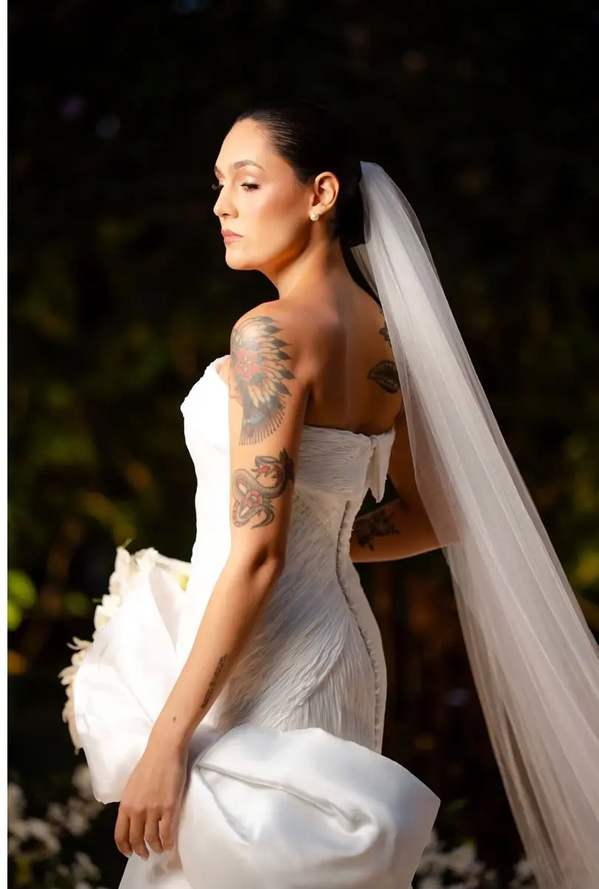

URBANO JUNIOR · GOIÂNIA
Vestidos de noiva sob medida em Goiânia
Criação de vestidos de noiva com Urbano Junior, da definição do modelo e dos tecidos à modelagem, provas e acabamentos. Atendimento com hora marcada no Jardim América.
CONVERSAR SOBRE MEU VESTIDOPortfólio de noivas
Vestidos de noiva
Tecidos e materiais

Processo de criação
Como o vestido é desenvolvido
A criação sob medida envolve decisões sobre modelo, materiais e caimento. As etapas e o cronograma são alinhados antes do início do projeto.
- 01
Conversa e referências
A data, o local e o tipo de cerimônia ajudam a orientar a criação. Leve referências de modelos e conte suas preferências.
- 02
Desenho e materiais
Silhueta, tecidos, rendas, estrutura e detalhes são discutidos junto com o escopo e o orçamento do projeto.
- 03
Modelagem e provas
O vestido é desenvolvido a partir das medidas. As provas permitem avaliar caimento, proporções e conforto.
- 04
Acabamentos e entrega
Os detalhes finais e os ajustes são concluídos de acordo com o projeto e o cronograma combinados.
Perguntas frequentes sobre vestidos de noiva
Tirar uma dúvida pelo WhatsAppComo funciona a criação de um vestido de noiva sob medida?
O desenvolvimento começa com uma conversa sobre a cerimônia, suas referências e o modelo desejado. Depois são definidos desenho, tecidos, medidas e detalhes. A modelagem, as provas e os acabamentos fazem parte do processo até a entrega, conforme o projeto combinado.
Quanto custa um vestido de noiva sob medida em Goiânia?
O orçamento depende do modelo, dos tecidos, da estrutura, dos bordados e da complexidade dos acabamentos. Para consultar valores com Urbano Junior, envie a data do casamento e suas referências pelo WhatsApp. O valor e o que está incluído são definidos na proposta do projeto.
Com quanto tempo de antecedência devo procurar o estilista?
Entre em contato assim que tiver a data do casamento e as primeiras referências. O prazo depende da agenda do studio e da complexidade do vestido. Antes de iniciar, confirme a disponibilidade e combine o cronograma de criação, provas e entrega.
Posso levar referências e personalizar o modelo do vestido?
Sim. Fotos de referência ajudam a explicar suas preferências de silhueta, decote, mangas, saia e detalhes. Essas ideias são discutidas durante a criação para definir um modelo sob medida, considerando o caimento, o tecido e a proposta da cerimônia.
Como são escolhidos os tecidos, as rendas e os acabamentos?
A escolha considera o desenho do vestido, a estrutura necessária, o movimento e o orçamento. Seda, renda e outros tecidos podem ser discutidos a partir das referências. A disponibilidade dos materiais e os acabamentos devem ser confirmados na definição do projeto.
Quantas provas são necessárias para um vestido de noiva?
A quantidade de provas varia conforme a modelagem e os ajustes necessários. Nas provas são avaliados caimento, conforto, comprimento e detalhes. Combine os encontros com o studio e confirme em qual etapa levar o sapato e as peças que pretende usar com o vestido.
Onde fica o studio Urbano Junior e como agendar atendimento?
O studio fica na Rua C-146, 220, Jardim América, Goiânia – GO, CEP 74255-170. O atendimento é com hora marcada. Para agendar e consultar a disponibilidade para a data do casamento, fale pelo WhatsApp +55 (62) 98164-7663.
Localização e contato
Atendimento com hora marcada no studio Urbano Junior, em Goiânia.
Studio Urbano Junior
Rua C-146, 220 · Jardim AméricaGoiânia – GO · 74255-170